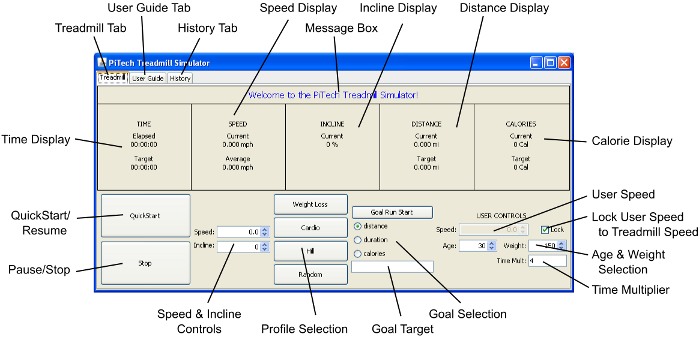

πTech Treadmill Simulator Software
Users’ Guide
The goal of this software product is to simulate the use of a treadmill. The
program itself has three main sections, accessible by tabs:
- Treadmill control, which allows you to control the virtual treadmill and
runner. This is described in sections 3 and 4,
- User Guide, which displays a copy of this user guide, and
- Workout History, which allows you to view the history of the runner over
the course of all workouts. This is described in section 5.
Figure 1:
Interface of the Software
|

|
- Age & Weight Selection
- Select the age and weight of the virtual runner.
Some calculations depend on these values.
- Calorie Display
- These are how many calories have been burned by the
virtual runner during the workout so far.
- Distance Display
- This is the distance that the virtual runner has
travelled.
- Goal Selection
- These three radio buttons select which type of goal to
set.
- Goal Target
- Input the target distance, duration, or calories in this
area.
- History Tab
- This displays a listing of detailed statistics about your run
session.
- Incline Display
- This is the current inclination of the treadmill, in
percent.
- Lock User Speed
- to treadmill speed. When this is checked, the virtual
runner will match the pace of the treadmill belt.
- Message Box
- Displays important status messages from the treadmill.
- Pause/Stop
- Press this button once to pause the simulator. Press it again,
while paused, to stop the simulator completely.
- Profile Selection
- Select to run a built-in profile.
- QuickStart/Resume
- Starts the simulator if it is currently stopped, or
resumes the session if the simulator is currently paused.
- Speed & Incline Controls
- Increase or decrease the current belt speed and
incline.
- Speed Display
- This is the speed at which the virtual runner is currently
running.
- Time Display
- This displays the time elapsed so far.
- Time Multiplier
- How fast the simulation should run.
- Treadmill Tab
- This displays the main controls of the treadmill and
virtual runner.
- User Guide Tab
- This displays a copy of this User Guide.
- User Speed
- Increase or decrease the speed of the virtual runner,
independent of the speed of the treadmill. (Note: Lock User Speed must be
unchecked to use this control.)
3 Controlling the Belt
There are two main ways to control the belt: manual user control (the default),
and with a built-in profile.
- Manual user control, in which the user changes the speed and incline
manually as he is using the simulator. The simulated track adjusts according to
the updated changes and stay at those settings unless the settings are changed
again manually.
- Preset workout, a particular pattern that the track follows. The system
automatically adjusts the speed and incline at preset intervals to follow that
particular pattern. There are a few different patterns that the system can
follow.
The preset workout plans are a full-on, immersive workout. Therefore, to apply
or remove a program, the treadmill must be stopped.
In addition to controlling the belt, you can set goals for yourself. When you
reach the goal, the program will automatically alert you in the Message
Box. For more information on setting goals, see section 4.
3.1 Manual User Control
- If you are already running under a preset workout plan, you will have to
stop the treadmill. Press the Pause/Stop button until the treadmill is
fully cleared.
- Press QuickStart. The simulator belt will begin moving slowly at the
preset speed of 1.
- Change the speed by editing the Speed Control. You can use
the up and down arrows, or enter the value directly into the text
box. The speed has a minimum value of 0 mph, and a maximum of 15 mph. You can
adjust it in increments of 0.1 mph.
- Change the incline by editing the Incline Control. You can
use the up and down arrows, or enter the value directly into the text
box. The inclination has a minimum value of 0%, and a maximum of 15%.
- When the treadmill is running, pressing Pause will result in the
belt slowing down and coming to a stop. The QuickStart/Resume button will
display Resume, and the Pause/Stop button will display Stop.
- To resume the treadmill with the same speed and incline when paused,
press Resume.
- If the user presses Stop while the treadmill is paused then the
treadmill will become stopped. When this happens, the speed and inclination are
both reset to 0, and any goals or programs are lost. Also, the
QuickStart/Resume button displays QuickStart.
3.2 Using a Preset Workout Plan (Automatic
Control)
You can use a preset workout plan to let the simulator adjust the speed and
incline of the workout. You can still adjust the speed and incline manually
during the preset.
There are a few types of workout programs to choose from:
- Cardio,
- Cross Country,
- Sprint, and
- Weight Loss.
- If you are already running under another workout plan, or if you are
running manually, you will have to stop the treadmill. Press the
Pause/Stop button until the treadmill is fully cleared.
- Use the Program Control to select an available program.
- All controls in the manual user control, as described in section
3.1, are also available, but the treadmill will also automatically
adjust the speed and incline.
4 Goals
Independent of the type of workout you choose, you have the option of setting
target goals. This is a useful option which will alert you when you have run a
certain distance, burned a certain number of calories, or run for a certain
length of time. You can set one of each type of goal at any given time.
- Use the Goal Selection options to select which goal you will work
toward: a distance-, duration-, or calorie-based goal.
- Use the Goal Target inputs to enter your goal: for distance, how far
you want to run; for duration, how much time you want to spend running; or for
calorie, how many calories you want to burn.
- The value you pick will appear respectively in the Distance,
Time, or Calorie Display under Target. If there is no goal of
that type active, the Target will display zero.
- Press Goal Run Start to activate your goal.
At any time during a run, you can adjust your goals using the Goal
Selection and Goal Target inputs.
- Select the type of the goal that you want to clear (distance, duration, or
calories).
- Enter a goal of zero and select Goal Run Start.
- The treadmill will continue moving at the same speed with the same
inclination.
When you reach a goal, the program displays a message in the Message Box.
It continues moving at the same speed and incline, and you are free to input
another goal.
5 Viewing Workout History
The software stores a detailed history of your workouts and can display several
statistics to help you track your fitness over a period of time. In addition to
the information displayed in the Treadmill Tab (such as current speed,
average speed, current incline, or calories burnt), you can access a long-term
history of your runs. This information is available at any time from the
History Tab.
- Select the History Tab.
- The treadmill, if moving, will continue at the same speed and incline.
- The program will show your user history, including time, distance, and
calories burnt per workout.
- Select the Treadmill Tab to return to the treadmill control.